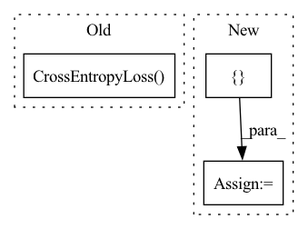

Pattern ID :19490
Before Change
def __init__(self, model_cfg, training_cfg, *args, **kwargs):
super().__init__(model_cfg, training_cfg, *args, **kwargs)
// define loss function.
self.loss_fn = nn.CrossEntropyLoss()
def forward(self, x):
feature = self.backbone(x)
return self.classifier(feature)After Change
self.rdrop = True
self.rdrop_alpha = training_cfg["rdrop"]["alpha"]
// initialize sub-loss functions. These functions must recieve (logits, y).
sub_losses = []
sub_loss_fns = training_cfg.get("sub_losses", {})
for loss_name, loss_cfg in sub_loss_fns.items():
loss_module = self.build_module(
module_type=loss_cfg["name"],In pattern: SUPERPATTERN
Frequency: 3
Non-data size: 3
Instances Fragment ID: 63511583
Project Name: krenerd/awesome-modular-pytorch-lightning
Commit Name: 42153bc05718dcfa90fa3620fdbf9bd8f28d813c
Time: 2022-06-13
Author: 48239275+krenerd@users.noreply.github.com
File Name: lightning/vision/classification.py
M Class Name: ClassificationTrainer
N Class Name: ClassificationTrainer
M Method Name: __init__(3)
N Method Name: __init__(3)
M Parent Class: _BaseLightningTrainer
N Parent Class: _BaseLightningTrainer
M File Name: lightning/vision/classification.py
N File Name: lightning/vision/classification.py
M Start Line: 11
M End Line: 11
N Start Line: 15
N End Line: 45
Before Change
// TODO: maybe do this with some trainer object...
// FIXME, its here just for the flow...
self.loss_fn = torch.nn.CrossEntropyLoss()
def set_dataloader(self, dataloader):
if self.is_first_partition:
self.dataloader = dataloaderAfter Change
// Async handle objects
self.async_fwd_objects = {}
self.async_bwd_objects = {}
self.logger = logging.getLogger("msnag")
def set_dataloader(self, dataloader): Fragment ID: 63511591
Project Name: saareliad/ftpipe
Commit Name: 55224ec831718fea95aaf8e91b7137e31f3ae44a
Time: 2019-12-01
Author: saareliad@campus.technion.ac.il
File Name: communication/msnag_runtime.py
M Class Name: SinglePartitionRuntime
N Class Name: SinglePartitionRuntime
M Method Name: __init__(11)
N Method Name: __init__(11)
M Parent Class:
N Parent Class:
M File Name: communication/msnag_runtime.py
N File Name: communication/msnag_runtime.py
M Start Line: 62
M End Line: 81
N Start Line: 63
N End Line: 90
Before Change
batch = tuple(t.to(self.device) for t in batch)
input_ids, input_mask, segment_ids, label_ids = batch
train_target = Class2Simi(label_ids, mode="cls").detach()
loss_fct = nn.CrossEntropyLoss()
loss = self.model(input_ids, segment_ids, input_mask, train_target, loss_fct = loss_fct, mode = "train")
self.optimizer.zero_grad()
loss.backward()After Change
eval_true, eval_pred = self.get_outputs(args, mode = "eval")
eval_score = round(accuracy_score(eval_true, eval_pred) * 100, 2)
eval_results = {
"train_loss": loss,
"eval_score": eval_score,
"best_score":best_eval_score,
}
self.logger.info("***** Epoch: %s: Eval results *****", str(epoch + 1))
for key in sorted(eval_results.keys()):
self.logger.info(" %s = %s", key, str(eval_results[key]))
Fragment ID: 63511590
Project Name: thuiar/textoir
Commit Name: 4f0068bc25a3a26da045579505b16f4458389c60
Time: 2021-08-02
Author: zhang-hl20@mails.tsinghua.edu.cn
File Name: open_intent_discovery/methods/semi_supervised/KCL_BERT/pretrain.py
M Class Name: PretrainKCLManager
N Class Name: PretrainKCLManager
M Method Name: train(3)
N Method Name: train(3)
M Parent Class:
N Parent Class:
M File Name: open_intent_discovery/methods/semi_supervised/KCL_BERT/pretrain.py
N File Name: open_intent_discovery/methods/semi_supervised/KCL_BERT/pretrain.py
M Start Line: 51
M End Line: 81
N Start Line: 56
N End Line: 113